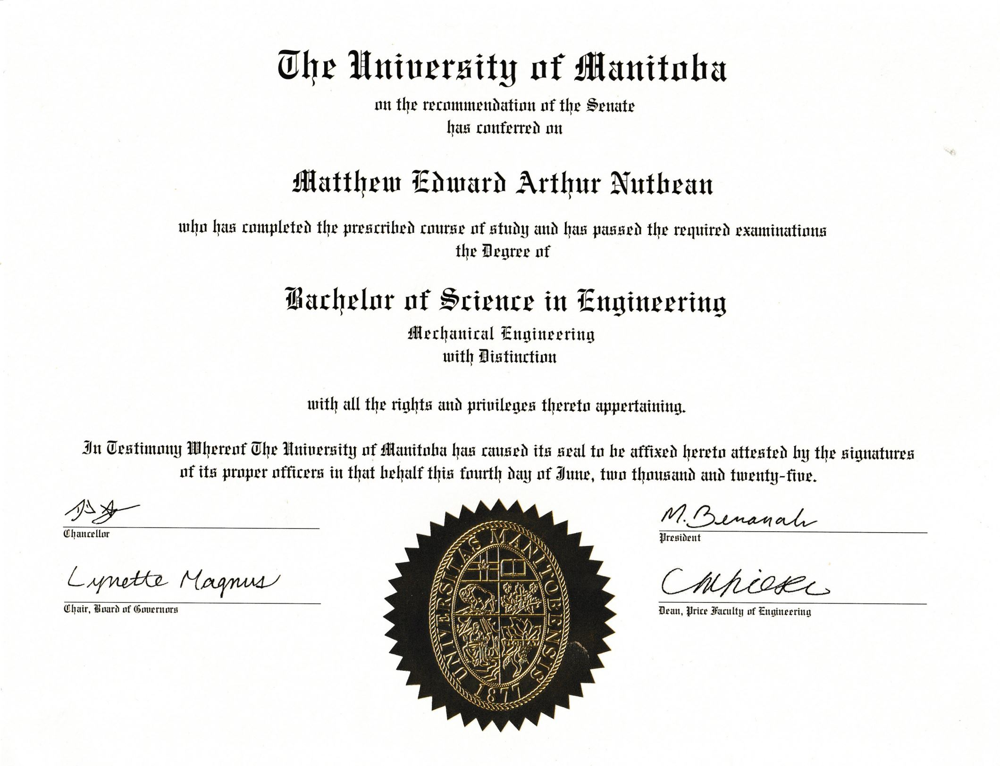

Degree
The PDF of my undergraduate degree can be viewed or downloaded with the below two buttons.
Below is a preview of my undergraduate degree.

I achieved my undergraduate degree with Distinction due to my GPA being greater than 3.80.
Although not stated on my degree, my concentration in mechanical engineering was the Aerospace Stream. I believe that the Aerospace Option is the only concentration which is inserted onto a degree. I originally planned to do the Aerospace Option, but I decided to take the two semester Thesis course in my last academic year as opposed to two aerospace courses, which demoted my concentration to the Aerospace Stream. This is despite my research in the Thesis course being aerospace in nature.